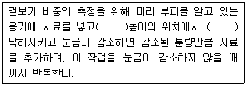
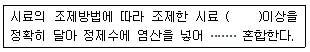
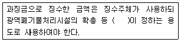
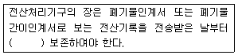
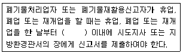

폐기물처리산업기사 (2007-05-13 기출문제)
1과목: 폐기물개론
1. 물질회수를 위한 선별방법 중 손선별에 관한 설명으로 틀린 것은?
- 컨베어 벨트를 이용하여 손으로 종이류, 플라스틱류, 금속류, 유리류 등을 분류한다.
- 기계적인 선별보다 작업량은 증가할 수 있으나 정확도는 떨어진다.
- 파쇄공정 유입 전 폭발가능성 있는 물질을 분류할 수 있는 장점이 있다.
- 작업효율은 0.5 TON/인ㆍ시간 정도이다.
(정답률: 알수없음)

2. 쓰레기 선별방법 중 Trommel 스크린 선별효율에 영향을 주는 인자에 관한 설명으로 알맞지 않은 것은?
- 스크린에 폐기물을 주입하기 이전에 분쇄기를 두는 것이 효과적이다.
- 회전속도는 어느 정도 증가할 수 록 선별효율이 증가하나 그 이상이 되면 막힘 현상이 일어난다.
- 경사도가 크면 효율은 증진되나 부하율이 떨어진다.
- 경험적으로 [임계회전속도 x 0.45 = 최적회전속도]로 나타낼 수 있다.
(정답률: 알수없음)
3. 폐기물을 수거하여 분석한 결과 함수율이 30%이고 총 휘발성 고형물은 80%, 유기탄소량은 총 휘발성 고형물의 90% 이었다. 또한 총 질소량은 총 고형물의 2%라 할 때 이 폐기물의 C/N(유기탄소량/총질소량)은? (단, 비중은 1.0 기준)
- 28
- 36
- 42
- 51
(정답률: 알수없음)
4. 새로운 쓰레기 수집방법 중 pipe-line방식에 관한 설명으로 알맞지 않은 것은?
- 쓰레기 발생빈도가 낮아야 현실성이 있다.
- 대형폐기물에 대한 전처리가 필요하다.
- 잘못 투입된 물건은 회수하기가 곤란하다.
- 장거리 이용이 곤란하다.
(정답률: 알수없음)
5. 쓰레기 파쇄기에 대한 설명 중 적절하지 못한 사항은?
- 전단파쇄기는 주로 목재류, 플라스틱류, 및 종이류를 파쇄 하는데 이용된다.
- 전단파쇄기는 대체로 충격파쇄기에 비해 파쇄속도가 느리고 이물질의 혼입에 대하여 약하다.
- 충격파쇄기는 기계의 압착력을 이용하는 것으로 주로 왕복식을 적용한다.
- 압축파쇄기는 파쇄기의 마모가 적고 비용이 적게 소요되는 장점이 있다.
(정답률: 알수없음)
6. 어느 주거지역에서 1일 1인당 1.2kg의 폐기물이 발생되고 1가구당 3인이 살며 이 지역의 총가구수는 3,000 일 때 5일간의 총 폐기물 발생량은?
- 58,000 kg
- 54,000 kg
- 31,600 kg
- 30,800 kg
(정답률: 알수없음)
7. 폐기물의 관리에 있어서 가장 우선적으로 고려하여야 할 사항은?
- 재회수
- 재활용
- 감량화
- 소각
(정답률: 알수없음)
8. 쓰레기의 새로운 운송기술 중 관거를 이용한 공기수송에 관한 설명으로 알맞지 않는 것은?
- 진공수송의 경제적인 수송거리는 약 2km 정도이다
- 진공수송에 있어서 진공도는 최대 0.5 kg/cm2Vac 정도이다.
- 가압수송으로 연속수송을 하고자 할 경우에는 크기가 불균일해서 부착되기 쉽고 우동성ㅇ 나쁜 쓰레기를 정압으로 연속정량 공급하는 것이 곤란하다.
- 가압수송은 진공수송에 비하여 경제적이나 수송거리가 약 1km 내외로 짧은 것이 단점이다.
(정답률: 알수없음)
9. 거주지가 정해진 수거일에 맞추어 쓰레기 저장용기를 노변에 갖다 놓으면 수거차량이 용기를 비우고 빈 용기는 주인이 찾아 가는 쓰레기 수거형태는?
- set out set back service
- curb service
- set out service
- alley service
(정답률: 알수없음)
10. 인구 1,000,000명이고, 1인 1일 쓰레기 배출량은 1.4 kg/인ㆍ일이라 한다. 쓰레기의 밀도가 750 kg/m3라고 하면 적재량 12m3인 트럭(1대 기준)으로 1일 동안 배출된 쓰레기 전량을 운반하기 위한 횟수는?
- 156회
- 166회
- 176회
- 186회
(정답률: 알수없음)
11. 어떤 쓰레기 입도를 분석한 결과, 입도누적곡선상의 10%, 40%, 60%, 90%의 입경이 각각 2㎜, 5㎜, 10㎜, 20㎜이었다고 한다면 유효입경은?
- 2 ㎜
- 5 ㎜
- 7 ㎜
- 10 ㎜
(정답률: 알수없음)
12. 채취한 쓰레기 시료의 성상분석을 위한 절차 중 가장 먼저 이루어지는 것은?
- 건조
- 밀도측정
- 분류
- 전처리
(정답률: 알수없음)
13. 적환장에 대한 설명으로 가장 거리가 먼 것은?
- 최종 처리장과 수거 지역의 거리가 먼 경우 사용하는 것이 바람직하다.
- 폐기물의 수거와 운반을 분리하는 기능을 한다.
- 적환장에서 재사용 가능한 물질의 선별이 가능하다.
- 적환장의 위치는 최종 처분지와 가깝게 위치하는 것이 바람직하다.
(정답률: 알수없음)
14. 슬러지를 농축시키는 이유와 가장 거리가 먼 사항은?
- 유해물질 농도 감소
- 화학약품 투여량 감소
- 처리비용 감소
- 저장 탱크 용적 감소
(정답률: 알수없음)
15. 우리나라 폐기물의 종합적인 관리 대책으로 틀린 것은?
- 폐기물의 재생 및 재활용
- 분리 수거 체계의 확립
- 매립비용 증대
- 폐기물 발생의 감량화
(정답률: 알수없음)
16. 분뇨의 특성에 관한 설명으로 틀린 것은?
- 분뇨는 외관상 황색~다갈색이며 비중은 1.02 정도이다.
- 분뇨는 하수슬러지에 비해 질소의 농도가 높다.
- 다량의 유기물을 포함하며 고액분리가 곤란하다.
- 분뇨 중 질소화합물의 함유형태를 보면 분은 VS의 80~90% 정도이다.
(정답률: 알수없음)
17. 청소상태를 평가하는 평가법 중 서비스를 받는 시민들의 만족도를 설문조사하여 나타내어지는 사용자 만족도 지수는?
- CEI
- USI
- PPI
- CPI
(정답률: 알수없음)
18. 부피 감소율이 80%인 쓰레기의 압축비는?
- 2
- 3
- 4
- 5
(정답률: 알수없음)
19. 다음은 겉보기 비중을 측정하는 방법에 대한 설명이다. ( )안에 들어갈 숫자로 올바르게 짝지어진 것은?

- 30 cm, 3회
- 30 cm, 5회
- 60 cm, 3회
- 60 cm, 5회
(정답률: 알수없음)
20. 수분이 60%, 수소가 8%인 폐기물의 고위발열량이 4,000 kcal/kg 이라면 저위발열량(kcal/kg)은?
- 3,018
- 3,208
- 3,408
- 3,568
(정답률: 알수없음)
2과목: 폐기물처리기술
21. 합성차수막인 PVC의 장단점을 설명한 내용과 가장 거리가 먼 것은?
- 강도가 높다.
- 접합이 어렵다.
- 자외선, 오존, 기후에 약하다.
- 대부분의 유기화학물질에 약하다.
(정답률: 알수없음)
22. 용매추출에 이용 가능성이 높은 폐기물의 특징으로 틀린 것은?
- 높은 분배계수를 가지는 것
- 높은 끊는점을 가질 것
- 물에 대한 용해도가 낮을 것
- 일도가 물과 다를 것
(정답률: 알수없음)
23. 어느 분뇨처리장에서 BOD가 20,000mg/ℓ, SS가 30,000mg/ℓ인 분뇨를 2kℓ/일 소화처리 하고자 한다. 이때 협잡물 제거장치에 의해 SS는 30%, BOD는 20% 제거된다고 하면 소화조로 유입되는 BOD 부하량은? (단, 분뇨 비중 1.0, 협잡물 제거 후 소하조로 유입)
- 16 kg/일
- 32 kg/일
- 48 kg/일
- 54 kg/일
(정답률: 알수없음)
24. 매시간 10 ton의 폐유를 소각하는 소각로에서 황산화물을 탕황하여 부산물인 90% 황산으로 전량 회수한다면 그 부산물량(kg/hr)은? (단, 폐유 중 황성분 2%, 탈황율 90%라 가정한다.)
- 약 492
- 약 522
- 약 574
- 약 613
(정답률: 알수없음)
25. 분뇨를 혐기성 소화처리 할 때 발생하는 CH4 gas의 부피는 분뇨투입량의 약 8배라고 한다. 1일에 분뇨 600kℓ씩을 처리하는 소화시설에서 발생하는 CH4가스를 에너지원으로 하여 24시간 균등 연소시킬 때 얻을 수 있는 시간당 열량은? (단, CH4의 발열량은 6000 kcal/m3)
- 1.0 x 105kcal/hr
- 1.2 x 108kcal/hr
- 1.6 x 107kcal/hr
- 1.8 x 108kcal/hr
(정답률: 알수없음)
26. 분뇨처리장 1차침전지에서 1일 슬러지 제거량이 80m3/day 이고, SS 농도가 30,000mg/L 이었다. 이 슬러지를 탈수했을때 탈수된 슬러지의 함수율은 80% 이었다면 탈수된 슬러지 량은? (단, 슬러지 비중 1.0)
- 10 ton/day
- 12 ton/day
- 14 ton/day
- 16 ton/day
(정답률: 알수없음)
27. 소각시 다이옥신(Dioxin)의 발생 억제 방법에 관한 설명으로 알맞지 않는 것은?
- 로내 온도를 300 ~ 350℃ 범위로 일정하게 운전하여 다이옥신성분 발생을 최소화 한다.
- 배기가스 conditioning시 칼슘 및 활설탄분말 투입시설을 설치하여 다이옥신과 반응 후 집진함으로서 줄일 수 있다.
- 유기 염소계 화합물(PVC 제품류) 반입을 제한한다.
- 페인트가 칠해져 있거나 페인트로 처리된 목재, 가구류 반입을 억제, 제한한다.
(정답률: 알수없음)
28. 매입 후 2년이 경과하여 혐기성 단계로 발생되는 가스의 구성비가 거의 일정한 정상상태가 되었다. 이 때의 가스 구성비로 가장 적절한 것은?
- 메탄 : 이산화탄소 = 55 % : 45 %
- 메탄 : 이산화탄소 = 65 % : 35 %
- 메탄 : 이산화탄소 = 75 % : 25 %
- 메탄 : 이산화탄소 = 85 % : 15 %
(정답률: 알수없음)
29. 전처리에서의 SS 제거율은 50%, 1차 처리에서 SS 제거율이 80%일 때 방류수 수질기준 이내로 처리하기 위한 2차처리 최소효율은? (단, 분뇨 SS : 10,000mg/L, SS 방류수 수질기준 : 70 mg/L)
- 93 %
- 91 %
- 89 %
- 87 %
(정답률: 알수없음)
30. 연직차수막에 대한 설명으로 틀린 것은? (단, 표면차수막과 비교 기준)
- 차수막 보강시공이 가능하다.
- 지중에 수평방향의 차수층이 존재할 때 사용된다.
- 지하수 집배수 시설이 불필요하다.
- 단위면적당 공사비는 싸지만 총공사비는 비싸다.
(정답률: 알수없음)
31. 침출수를 처리하는 방법 중 펜톤산화에 대한 설명으로 틀린 것은?
- 철과 과산화수소가 이용된다.
- 침출수 pH를 9 ~ 10 으로 조정한다.
- 난분해성 물질을 생분해성 물질로 변화시킨다.
- 슬러지 생산량이 많아 질 수 있다.
(정답률: 알수없음)
32. 소각로 중 다단로 방식의 장점으로 틀린 것은?
- 열적충격이 방지되어 내화물 등의 손상이 적다.
- 수분함량이 높은 폐기물의 연소가 가능하다.
- 휘발성이 적은 폐기물 연소에 유리하다.
- 많은 연소영역이 있으므로 연소효율을 높일 수 있다.
(정답률: 알수없음)
33. 어느 도시의 분뇨농도는 TS가 6%이고, TS의 65%가 VS이다. 이 분뇨를 협기성소화처리를 한다면 분뇨 5m3당 발생하는 CH4가스의 양은? (단, 비중은 1.0으로 가정, 분뇨의 VS 1kg당 0.4m3의 CH4가스발생)
- 68m3
- 78m3
- 108m3
- 128m3
(정답률: 알수없음)
34. 함수율이 50%인 쓰레기를 건조시켜 함수율 20%인 쓰레기로 만들려면 쓰레기 1ton당 수분 증발량은?
- 225 kg
- 375 kg
- 415 kg
- 455 kg
(정답률: 알수없음)
35. 시멘트 고형화법 중 시멘트 기초법에 관한 설명으로 틀린 것은?
- 다양한 폐기물을 처리할 수 있다.
- 폐기물의 건조 또는 탈수가 필요하다.
- 낮은 pH에서 폐기물 성분의 용출 가능성이 있다.
- 사용되는 시멘트의 양을 조절함으로써 폐기물 콘크리트의 강도를 높일 수 있다.
(정답률: 알수없음)
36. 일반적으로 열용량(kcal/kg)이 가장 높고 회분량(%)이 10~20%, 수분함량이 4% 이하인 RDF의 종류는?
- Bulk RDF
- Poeder RDF
- Pellet RDF
- Fluff RDF
(정답률: 알수없음)
37. 유동상 소각로의 장점이 아닌 것은?
- 기계적 구동부분이 적어 고장율이 낮다.
- 상(床)으로부터 찌꺼기의 분리가 용이하다.
- 로내 온도의 자동제어로 열회수가 용이하다.
- 반응시간이 빨라 소각시간이 짧다.
(정답률: 알수없음)
38. 프로판(C3H8) 3 Sm3의 연소에 필요한 이론공기량은?
- 67.6 Sm3
- 71.4 Sm3
- 89.5 Sm3
- 95.3 Sm3
(정답률: 알수없음)
39. 배연 탈황시 발생된 슬러지 처리에 많이 쓰이는 고형화 처리법은?
- 시멘트 기초법
- 석회 기초법
- 자가 시멘트법
- 열가소성 플라스틱법
(정답률: 알수없음)
40. 토양오염의 특징으로 틀린 것은?
- 오염경로의 다양성
- 피해발현의 직접성 및 급성적 형태
- 타 환경인자와의 영향관계의 모호성
- 오염의 비인지성
(정답률: 알수없음)
3과목: 폐기물 공정시험 기준(방법)
41. 가스크로마토 그래프분석에 사용하는 검출기 중 방사선 동위원소(53Ni,3H)를 이용하여 시료 중의 유기할로겐 화합물, 니트로화합물 및 유기금속화합물을 선택적으로 검출할 수 있는 것은?
- 열전도 검출기 (TCD)
- 수소염 이온화 검출기 (FID)
- 전자포획 검출기 (ECD)
- 방사동위 검출기 (FPD)
(정답률: 알수없음)
42. 흡광광도계를 이용하여 시료분석시 흡수셀 재질 중 플라스틱제는 주로 어떤 파장범위를 측정할 때 사용 되는가?
- 근적외부
- 근자외부
- 자외부
- 가시부
(정답률: 알수없음)
43. 폐기물공정시험방법에 사용되는 용어설명 및 일반적 총칙에 관한 내용으로 틀린 것은?
- ‘약’이라 함은 기재된 양에 대하여 ±10% 이상의 차가 있어서는 안된다.
- 시험에 사용하는 물은 따로 규정이 없는 한 정제수 또는 탈염수를 말한다.
- ‘냄새가 없다’라고 기재한 것은 냄새가 없거나, 또는 거의 없는 것을 표시하는 것이다.
- ‘정확히 취하여’라 하는 것은 규정한 양의 검체를 0.1mg까지 달아 정확히 취하는 것을 말한다.
(정답률: 알수없음)
44. 시료의 전처리 방법인 마이크로파에 의한 유기물분해에 관한 설명으로 틀린 것은?
- 산과 함께 시료를 용기에 넣고 마이크로파를 가한다.
- 재현성이 떨어지는 단점이 있다.
- 가열속도가 빠른 장점이 있다.
- 유기물이 다량 함유된 시료의 전처리에 이용된다.
(정답률: 알수없음)
45. 수산화나트륨(NaOH) 5g을 정제수 500mL에 용해시킨 용액의 농도는?
- 0.⑤ N
- 0.15 N
- 0.25 N
- 0.35 N
(정답률: 알수없음)
46. 흡광광도법에 의해 크롬을 정량하기 위해서는 크롬이온 전체를 6가크롬으로 변화시켜야 하는데 이때 사용하는 시약은?
- 디페닐카르바지드
- 질산암모늄
- 과망간산칼륨
- 염화제일주석
(정답률: 알수없음)
47. 대상폐기물의 양이 25 ton 일때 시료의 최소 수는?
- 10
- 12
- 14
- 16
(정답률: 알수없음)
48. 시료의 축소방법인 구획법에 의해 시료를 축소할 때 모아진 대시료를 네모꼴로 엷게 균일한 두께로 편 다음 등분하여 총 몇 개의 덩어리로 나누는가?
- 9
- 16
- 20
- 25
(정답률: 알수없음)
49. 크롬(Cr)을 원자흡광광도법(공기0아세틸렌불꽃)으로 시험하는 과정에서 철, 니켈등의 공존물질에 의한 방해영향이 크므로 어떤 시약을 넣어 측정하는가?
- 황산나트륨
- 인산나트륨
- 질산나트륨
- 염화나트륨
(정답률: 알수없음)
50. 수분 및 고형물 측정방법에 대한 설명 중 적합한 것은?
- 증발접시는 가급적 무게가 무거운 것을 사용하여 시료 측정오차를 최소화 한다.
- 평량병 또는 증발접시를 미리 1⑤ ~ 110℃에서 30분간 건조시킨 다음 실온에서 방냉한다.
- 시료는 1⑤ ~ 110℃의 건조기 안에서 2시간 이상 건조시킨다.
- 평량병 또는 증발접시는 시료의 두께를 10㎜ 이하로 넓게 펼 수 있는 정도로 하부 면적이 넓은 것을 사용하여야 한다.
(정답률: 알수없음)
51. 폐기물공정실험방법에 의한 온도 표시가 틀린 것은?
- 냉수 : 15 ℃ 이하
- 열수 : 약 100 ℃
- 온수 : 50 ~ 60 ℃
- 찬곳 : 0~15 ℃의 곳(따로 규정이 없는 경우)
(정답률: 알수없음)
52. 다음은 흡광광도법에서 사용하는 특수용도용 흡수셀 중 저농도 시료를 측정할 때 사용하는 것은?
- 사각형셀
- 원통형셀
- 유동셀
- 마이크로셀
(정답률: 알수없음)
53. 흡광광도계의 흡광도 눈금을 보정할 때 사용하는 시약으로 적당한 것은?
- 가망간산칼륨
- 중크롬산칼륨
- 티오황산나트륨
- 염화제일주석산
(정답률: 알수없음)
54. 다음은 용출시험방법의 시료용액의 조제에 관한 설명이다. ( ) 안에 알맞은 내용은?

- 10 g
- 50 g
- 100 g
- 200 g
(정답률: 알수없음)
55. 원추4분법에 의해 시료를 축소할 때 한번의 일련의 조작이 끝난 시료는 조작 전 시료보다 얼마만큼 축소되는가?
- 1/8
- 1/4
- 1/2
- 3/4
(정답률: 알수없음)
56. 용출용액 중의 PCBs 분석(가스크로마토그래프법)에 관한 내용으로 틀린 것은?
- 용출용액 중의 PCBs를 헥산으로 추출한다.
- 유효측정농도는 0.⑤mg/L 이상으로 한다.
- 전자포획 검출기를 사용한다.
- 검출기의 온도는 270 ~ 300 ℃ 범위이다.
(정답률: 알수없음)
57. 흡광광도분석법에서 목적성분의 농도를 정량하기 위해 다음 식을 적용한다. 식에 대해 잘못 설명한 것은? (단, 식은 It = Ioㆍ10 εθℓ)
- 램버어트 비어(Lambert-Beer)의 법칙이 적용된다.
- Io는 입사광의 강도, It는 투사광의 강도이다.
- ℓ은 빛의 투과거리이다.
- ε는 비례상수로서 투과계수이다.
(정답률: 알수없음)
58. 유도결합플라스마 발광광도법 분석장치의 구성요소가 아닌 것은?
- 시료원자화부
- 연산처리부
- 광원부
- 분광부
(정답률: 알수없음)
59. 다음 폐기물의 용출시험방법에 대한 설명 중 틀린 것은?
- 상온, 상압에서 진탕회수가 매분당 약 200회, 진폭이 4~5cm의 진탕기를 사용, 6시간 연속 진탕한다.
- 진탕이 어려운 경우 원심분리기를 사용하여 매분당 2,000회전 이상으로 30분 이상 원심분리한다.
- 용출시험이 용매는 염산으로 Ph를 5.8 ~ 6.3으로 한다.
- 용출시험시 폐기물시료와 용출용매를 1:10 (W:V)의 비로 혼합한다.
(정답률: 알수없음)
60. 흡광광도법으로 구리를 정향할 때 비스머스(Bi)가 구리의 양보다 2배 이상 존재할 경우, 어떤 색을 나타내어 방해하게 되는가?
- 적색
- 청색
- 청록색
- 황색제
(정답률: 알수없음)
4과목: 폐기물 관계 법규
61. 폐기물처리시설의 유지관리에 관한 기술업무를 담당할 기술관리인을 두어야 하는 폐기물처리시설 기준으로 틀린 것은? (단, 폐기물처리업자가 운영하는 폐기물처리시설이 아닌 경우임)
- 멸균분쇄시설로서 1일 처리능력이 5톤 이상인 시설
- 퇴비화시설로서 1일 처리능력이 5톤 이상인 시설
- 절단시설로서 1일 처리능력이 100톤 이상인 시설
- 압축시설로서 1일 처리능력이 100톤 이상인 시설
(정답률: 알수없음)
62. 관리형 매입시설에서 침출수 배출량이 1일 2,000m3이상인 경우, COD의 측정주기 기준은?
- 매일 1회 이상
- 주 1회 이상
- 월 2회 이상
- 월 1회 이상
(정답률: 알수없음)
63. 음식물폐기물처리시설의 기술관리인 자격기준으로 틀린 것은?
- 화공산업기사
- 기계기사
- 전기공사기사
- 토복산업기사
(정답률: 알수없음)
64. 폐기물처리시설인 차단형 매입시설의 정기검사항목이 아닌 것은?
- 빗물, 지하수 유입방지 조치
- 계량시설의 작동상태
- 사용종료매입지 밀폐상태
- 옹벽의 안정성
(정답률: 알수없음)
65. 다음은 청정지역에서의 관리형매입시설의 침출수 배출허용 기준을 나열한 것이다. 이중 잘못된 것은?
- 색도 - 100도 이하
- 카드뮴함유량 - 0.02mg/ℓ 이하
- 시안함유량 - 0.2 mg/ℓ 이하
- 수은함유량(mg/ℓ) - 불검출
(정답률: 알수없음)
66. 폐기물관리법이 적용되지 않는 물질과 가장 거리가 먼 것은?
- 원자력법에 의한 방사성물질 및 이에 의하여 오염된 물질
- 용기에 들어 있는 기체상 물질
- 하수도법에 의한 하수
- 수질환경보전법에 의한 수질오염방지시설에 유입되거나 공공수역으로 배출되는 폐수
(정답률: 알수없음)
67. 국가폐기물관리종합계획에 포함되어야 할 사항과 가장 거리가 먼 것은?
- 종합계획의 분석
- 종합계획의 기조
- 부문별 폐기물관리정책
- 재원조달 계획
(정답률: 알수없음)
68. 과태료 부과권자는 과태료를 부과 할 경우 몇 일 이상의 기간을 정하여 과태료처분대상자에게 구술 또는 서면에 의한 의견진술의 기뢰를 주어야 하는가?
- 5일 이상
- 10일 이상
- 15일 이상
- 30일 이상
(정답률: 알수없음)
69. 폐기물처리 가격의 최저액보다 낮은 가격으로 폐기물을 수탁한 자에 대한 벌칙기준은?
- 300만원 이하의 과태료
- 1000만원 이하의 과태료
- 1년이하의 징역 또는 1000만원 이하의 벌금
- 2년이하의 징역 또는 1500만원 이하의 벌금
(정답률: 알수없음)
70. 폐기물처리업 허가의 결격사유에 해당 되지 않는 것은?
- 미성년자
- 파산선고를 받고 복권된 지 2년이 경과되지 아니한 자
- 폐기물관리법을 위반하여 징역 이상의 형의 집행유예의 선고를 받고 그 집행유예기간이 경과하지 아니한 자.
- 폐기물처리업의 허가가 취소된 자로서 그 허가가 취소된 날부터 2년을 경과하지 아니한 자
(정답률: 알수없음)
71. 다음은 과징금에 관한 내용이다. ( ) 안에 알맞은 것은?

- 대통령령
- 환경부령
- 지방자치단체장
- 관계 중앙행정기관의 장
(정답률: 알수없음)
72. 폐기물인계서 등의 전산처리에 관한 내용이다. ( ) 안에 알맞은 것은?

- 6월간
- 1년간
- 2년간
- 3년간
(정답률: 알수없음)
73. 폐기물 재활용을 위한 에너지의 회수 기준으로 맞는 것은?
- 다른 물질과 혼합하지 아니하고 당해 폐기물의 저위발열량이 킬로그램당 4천6백칠로칼로리 이상일 것
- 다른 물질과 혼합하지 아니하고 당해 폐기물의 고위 발열량이 킬로그램당 4천6백킬로칼로리 이상일 것
- 다른 물질과 혼합하지 아니하고 당해 폐기물의 저위발열량이 킬로그램당 3천킬로칼로리 이상일 것.
- 다른 물질과 혼합하지 아니하고 당해 폐기물의 고위발열령이 킬로그램당 3천킬로칼로리 이상일 것.
(정답률: 알수없음)
74. 다음 ( ) 안에 알맞은 내용은?

- 5일
- 10일
- 20일
- 30일
(정답률: 알수없음)
75. 폐기물처리업 업종구분과 영업내용의 범위를 벗어나는 영업을 한 자에 대한 벌칙기준은?
- 3년 이하의 징역 또는 2천만원 이하의 벌금
- 2년 이하의 징역 또는 1천만원 이하의 벌금
- 1년 이하의 징역 또는 5백만원 이하의 벌금
- 1천만원 이하의 과태료
(정답률: 알수없음)
76. 폐기물발생억제지침 준수의무대상 배출자의 업종으로 틀린 것은?
- 제1차 금속산업 (조립금속제품제조업 제외)
- 섬유제품제조업 (봉제의복 제외)
- 자동차 및 트레일러 제조업
- 전기, 가스업
(정답률: 알수없음)
77. 주변지역 영향 조사 대상 폐기물처리시설 기준으로 맞는 것은?
- 매입면적 330제곱미터 이상의 사업장 지정폐기물 매립시설
- 매입면적 3300제곱미터 이상의 사업장 지정폐기물 매립시설
- 매립면적 1만제곱미터 이상의 사업장 지정폐기물 매립시설
- 매립면적 3만제곱미터 이상의 사업장 지정폐기물 매립시설
(정답률: 알수없음)
78. 폐기물처리시설 주변지역 영향 조사시 조사 횟수 기준으로 맞는 것은?
- 각 항목당 계절을 달리하여 4회 이상 측정하되 악취는 여름(6월부터 8월까지)에 2회 이상 측정하여야 한다.
- 각 항목당 계절을 달리하여 4회 이상 측정하되 악취는 여름(6월부터 8월까지)에 1회 이상 측정하야 한다.
- 각 항목당 계절을 달리하여 2회 이상 측정하되 악취는 여름(6월부터 8월까지)에 2회 이상 측정하여야 한다.
- 각 항목당 계절을 달리하여 2회 이상 측정하되 악취는 여름(6월부터 8월까지)에 1회 이상 측정하여야 한다.
(정답률: 알수없음)
79. 다음 중 폐기물관리법령에서 규정하고 있는 기계적 처리시설이 아닌 것은?
- 열분해시설
- 연료화시설
- 유수분리시설
- 멸균분쇄시설
(정답률: 알수없음)
80. 페기물통계조사는 몇 년 마다 실시하는 것을 원칙으로 하는가?
- 2년
- 3년
- 5년
- 7년
(정답률: 알수없음)